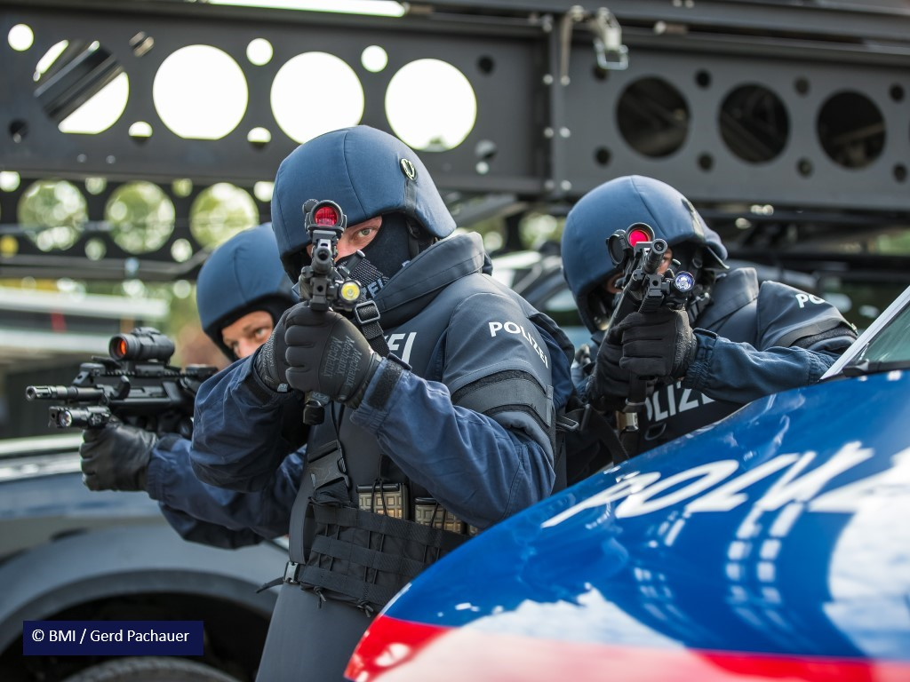
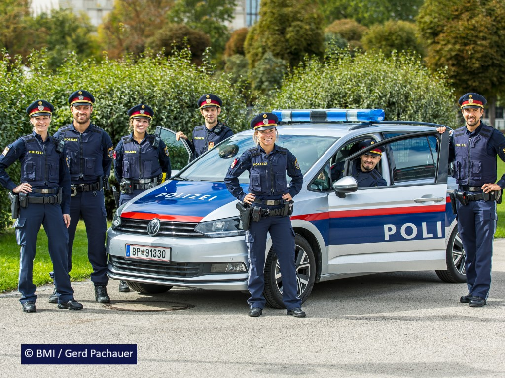

Willkommen auf der Webseite von der offiziellen österreichischen Polizei!
Die Gewährleistung von Sicherheit ist die umfassende und verantwortungsvolle Kernaufgabe des Bundesministeriums für Inneres. Gemeinsam sorgen unsere 38.000 Mitarbeiterinnen und Mitarbeiter mit vollem Einsatz – 365 Tage im Jahr, 24 Stunden täglich – für die Sicherheit der Bürgerinnen und Bürger in Österreich und aller Menschen, die hier leben. Sie tragen entscheidend dazu bei, dass Staat und Gesellschaft zuverlässig funktionieren.
Die Einsatzbereiche der österreichischen Bundespolizei:
| Nummer | help.gv.at-ID | Bezeichnung |
|---|---|---|
| HP7623 | 7623 | Grenzpolizeiinspektion (GREKO) Klagenfurt am Wörther See-Annabichl |
| HP7368 | 7368 | Polizeiinspektion (AGM-SB) Linz-Hauptbahnhof (AGM-SB) |
| HP7228 | 7228 | Polizeiinspektion Alland |
| HP7121 | 7121 | Polizeiinspektion Bad Ischl |
| HP7251 | 7251 | Polizeiinspektion Eisenstadt-Neusiedlerstraße |
| HP7451 | 7451 | Polizeiinspektion Fischamend |
| HP7007 | 7007 | Polizeiinspektion Wien-Kandlgasse |
| HP7538 | 7538 | Polizeiinspektion Wien-Koppstraße |
| HP6778 | 6778 | Polizeiinspektion Wien-Praterstern |
| HP6829 | 6829 | Polizeiinspektion Wien-Simmeringer Hauptstraße |
| HP7431 | 7431 | Polizeiinspektion/ Bezirksleitstelle Hollabrunn |
Der Streifendienst wird an 365 Tagen im Jahr rund um die Uhr durchgeführt und ist die wesentliche Säule der polizeilichen Arbeit.
Die Polizistinnen und Polizisten werden dabei mit allen polizeilichen Sachverhalten (Fahndungen, Verkehrsunfällen, Diebstählen, Gewaltdelikten, Todesfällen usw.) konfrontiert. Sie wehren akute Gefahren ab, leiten Maßnahmen ein, nehmen Anzeigen auf und helfen Opfern. Der Streifendienst ist eine herausfordernde, vielfältige und spannende Tätigkeit. Nach Absolvierung der Polizeischule versehen Polizistinnen und Polizisten im Streifendienst einer Polizeiinspektion ihren Dienst. Im Exekutivdienst werden Polizistinnen und Polizisten jeden Alters eingesetzt. Durch diese Tätigkeit wird auch die Voraussetzung geschaffen, sich für andere polizeiliche Aufgaben zu qualifizieren, da die Polizeiarbeit von Grund auf erlernt werden muss.
